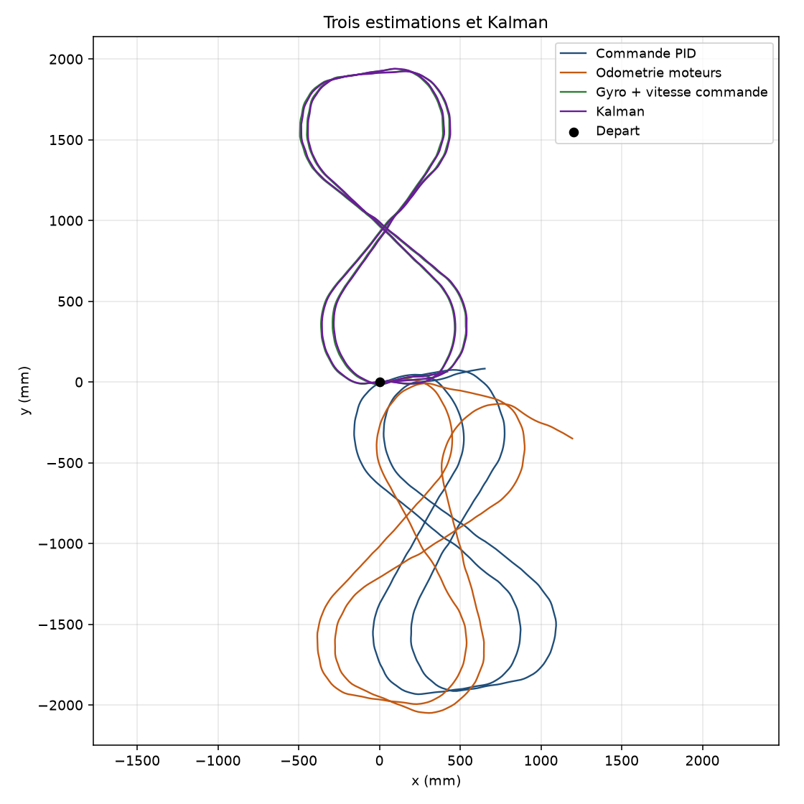
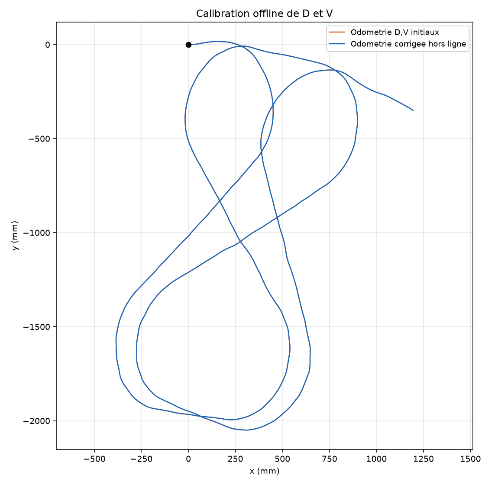
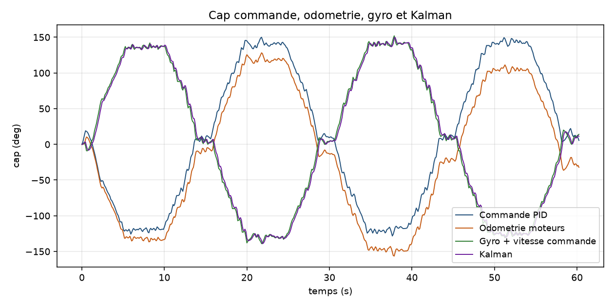
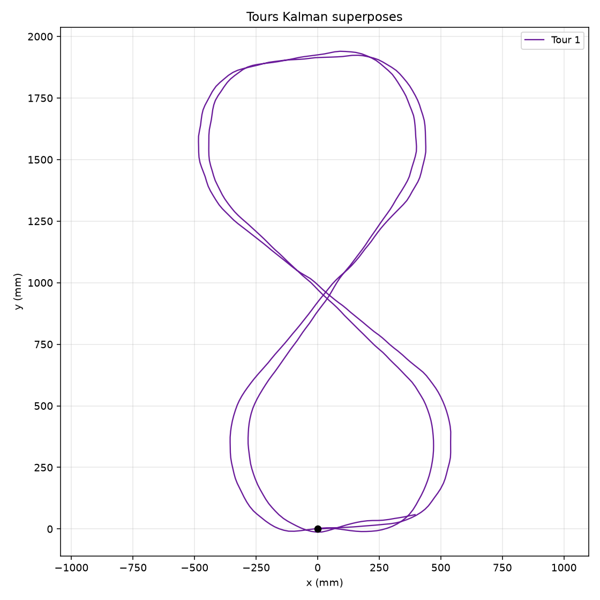

548 echantillons sur 60.2 s, tours 1. Ecart au point de depart en fin d'enregistrement : Commande PID : 658 mm. tour 1 : 658 mm. Odometrie moteurs : 1245 mm. tour 1 : 1245 mm. Gyro + vitesse commande : 426 mm. tour 1 : 426 mm. Kalman : 399 mm. tour 1 : 399 mm.



